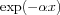

barwelconcoshanhambla![[eqn]](eqn/apowin8.png)
expgaukaiProvides a variety of apodization windows.
w = apowin(Type,nPoints) w = apowin(Type,nPoints,alpha)
apowin returns an apodization window with nPoints
point in the column vector w.
WindowType is a string specifying the window type.
The available types are listed in the following table.
| Type | Name | Function over |
bar | Bartlett | |
wel | Welch | |
con | Connes | |
cos | Cosine | |
han | Hann | |
ham | Hamming | |
bla | Blackman | |
exp | Exponential |  |
gau | Gaussian | |
kai | Kaiser |
The returned window is symmetric. If a '+' is appended
to the three-letter type string, only the right part of the
symmetric window function () is returned.
If a '-' is appended, the left part () is
returned. E.g., 'exp+' thus specifies an exponential decay.
alpha is a parameter which is required for the Kaiser,
Gaussian and exponential windows. Reasonable ranges for alpha
are listed below.
| Type | alpha range |
'exp' | |
'gau' | ![[eqn]](eqn/apowin15.png) |
'kai' |
The following code plots the Kaiser windows for a range of alpha values.
y = []; n = 100;
for alpha = 3:9, y(:,end+1) = apowin('kai',n,alpha); end
plot(y);
The comparison between the Blackman, Cosine and Hann windows
n = 100; x = linspace(0,1,n);
wBla = apowin('bla+',n); wCos = apowin('cos+',n);
wHan = apowin('han+',n);
plot(x,wBla,x,wCos,x,wHan);
legend({'Blackman','Cosine','Hann'})
illustrates the difference in their behaviour at the right border.